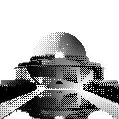

OPERATIONAL
Walk through the monument Boullée drew for Isaac Newton in 1784.

In 1784 the French architect Étienne-Louis Boullée drew a monument to Isaac Newton that was never built: a hollow stone sphere 150 m across, taller than the Great Pyramid, ringed by terraces of cypress trees. This is a to-scale reconstruction from his surviving drawings that you can walk through in the browser, on a computer or a phone.
The way in is a low arch and a long stone passage lit by oil lamps. It climbs under the tomb into the middle of the sphere, where it is night in the middle of the day. The vault is pierced so daylight comes through as stars: here they are the sky over Woolsthorpe the night Newton was born, each one a hole through the stone aimed at the sarcophagus.
The music is the opening of Haydn's Creation, up to "and there was light".
Follow me on X for updates! New builds, releases and works in progress get posted there first.